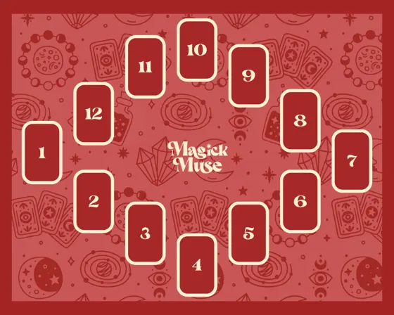

Card Grimoire
Horoscope Wheel Spread
Spread Type
Question Style

Card Details
Card 1: The First House: The Self
The first house refers to your physical body and appearance, as well as your identity, sense of self, and the immediate impression you make on others.
Card 2: The Second House: Personal Resources
The second house shows what you consider valuable. This includes money, personal possessions, resources, and how you relate to what you own. It also represents your earning ability, what qualities and skills you can use to make money.
Card 3: The Third House: The Near Environment
The third house covers three areas that at first may seem unrelated, but taken together represent ordinary daily life, what astrologers call the “near environment.” These are communications in your everyday life; involvement with friends, neighbors, siblings, and your community at large; and short-distance travel in your near environment.
Card 4: The Fourth House: Roots
The fourth house represents the foundation of your life: home, family, parents (especially your mother), tradition, heritage, the past, your homeland. In short, your roots.
Card 5: The Fifth House: Self-Expression
The fifth house shows your creative and self-expressive side, which may play out as artistic endeavors, romantic relationships, hobbies and amusements, or children.
Card 6: The Sixth House: Health and Service
The sixth house relates to health, health-oriented routines including nutrition and exercise, and the link between work and health. It also describes your daily work or chores, duties, job-oriented relationships, and service to others.
Card 7: The Seventh House: One-to-One Relationships
Traditionally the house of marriage and partnerships, the seventh house represents all one-to-one relationships, business as well as personal.
Card 8: The Eighth House: Transformation
The eighth is the house of the past, transformative change, death, inheritance, and other people’s resources. In this case, death usually refers to the end of something old so that something new can emerge. The eighth house also shows how another person’s resources (perhaps a partner’s) affect you.
Card 9: The Ninth House: Higher Knowledge
The ninth house represents the higher mind, philosophy, religion/spirituality, and advanced education, as well as long-distance travel, especially to foreign lands. This house shows your search for meaning and how you go about expanding your physical, mental, and spiritual horizons.
Card 10: The Tenth House: Life Task
The tenth house represents social or professional status, career, public image, and parents (the father especially). Authority, responsibilities, honor, and reputation are tenth-house matters too.
Card 11: The Eleventh House: Friendships
The eleventh house refers to your friends and groups with which you’re affiliated. Goals, hopes, and wishes are shown by this house too.
Card 12: The Twelfth House: The Hidden Realm
The twelfth house represents what’s hidden, or not yet revealed, including your dreams and fantasies. It also shows your latent talents as well as fears, weaknesses, secrets, and hidden enemies. Because matters associated with this sector are often unknown to us, this house is sometimes connected with self-undoing.
Description
For this spread, you lay out twelve cards in a circle, each card corresponds to one of the twelve houses of the astrological chart. Place your significator in the center. It’s recommended to do this spread on your birthday, to show what’s likely to happen in the coming year. You can also use it to provide information about a concern or situation, in a way similar to an event chart in astrology.
Each house in an astrological chart refers to a specific area of life; thus, you read the cards with regard to the houses in which they fall. After shuffling and cutting the cards, place one card in each house. The first house begins at the nine o’clock position, and you lay out the cards counterclockwise.
Astrology12
Number of Cards1
Symbols1